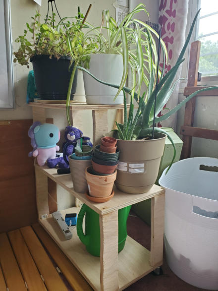
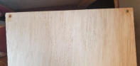
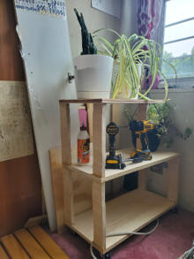
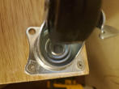
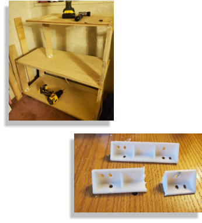


 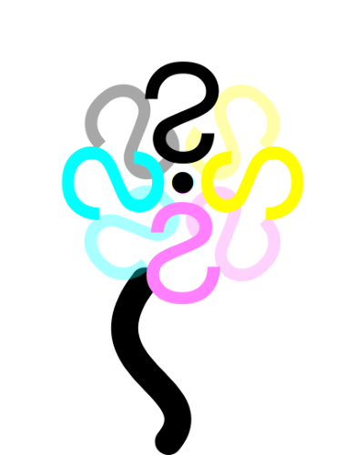
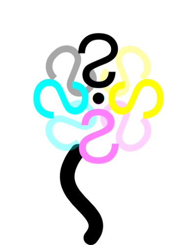
I reviewed my designs and reorganized
my inventory. With a few changes, I had
just enough screws to finish the project.
I immediately built the bottom tier. I
repurposed angle brackets from a closet
an used them to support the legs. This
also allowed me to cleverly attach the
2nd tier. That same night, I finished the
plant shelf.
My plants had a new home.
Mistake #2
Everything—even the screws I used—were repurposed from
other furniture or projects. At one point in this project, I
thought I didn’t have enough screws to complete the
project. I ordered screws but I miscalculated their size.
When I saw how big the screws really were, I decided to
test them on some scrap and . . .
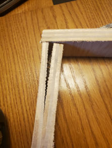
Mistake #1
I thought attaching the wheels first would be a good idea. I can
see the mistake even as I write this: attaching the wheel first
could mean an unbalanced base, i.e. angled legs. Luckily, I was
able to remove the wheel.
I attached the first leg and wheel, balanced it on top of another
leg and against a wall, and called it a night.
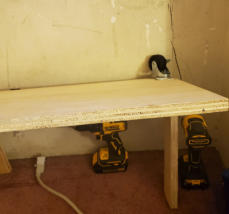
The plan:
The wheels have a base with 4 screw holes. The plan
was to drill a screw through the wheelbase, through
the shelf base, and into the leg. The remaining screw
holes would have smaller screws that didn’t go
through the base. Then I would build the next 2 tiers in
the same way.
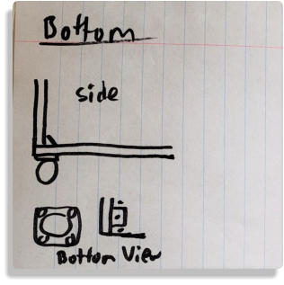
I cut the remaining legs in a style that matched
my desk’s legs and began prepping my
materials. I traced the wheelbase onto the
bottom of the shelf, sanded the legs, and
marked which side was the bottom of the leg.
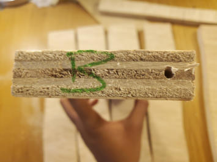
For the first tier, I measured out 8 legs with one being much
thinner than the rest. The thin leg served as a practice round
since I haven’t used my jigsaw in months.
It was a good decision.
This was the first time I didn’t make multiple prototypes for a project. Normally I sketch, make digital
renderings, and build low level prototypes, but the longer I took on this project, the unhealthier my
plants would become. With 3 (Update: 4) aloe sproutlings on the way, I needed to move. I chose a
shelf height and plugged in my jigsaw.
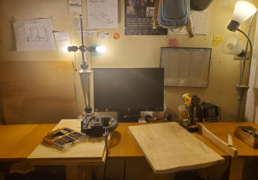
Researching plant shelves helped me see what
designs were out there as well as assess the total
cost ( time, money, and work ) of this project. I
found that most plant shelves are designed for short
and fairly small plants. Buying a shelf would mean
waiting for shipping and I would have no guarantee
that the shelf would support my growing plant
family.
There were features and construction methods I
wanted to use ( for example, a rod for hanging
plants or pocket holes ), but I learned that I didn’t
have the right materials or that I needed more
practice in order to implement them. I iterated
through sketches and brainstorms and broke down
the building process for each design and silhouette.
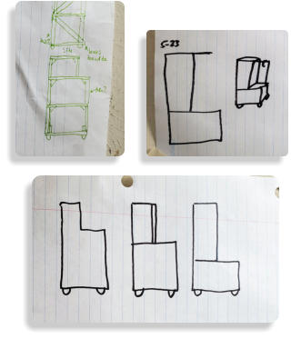
I used a good portion of my time relearning
woodworking practices and studying shelf
designs. Before this project, I built my desk so I
had some woodworking experience. However,
as someone learning the craft on their own,
there is always more to learn.
I learned creative ways to hide screws and
nails, how to maintain structural integrity and
how to be more conservative with wood glue.
At the same time, I continued looking at plant
shelf designs—applying what I learned to the
designs I studied.
I got to work.
•
Strong enough to hold my plants
•
Can hold various pots
•
Maximizes sunlight
•
Bonus: Hold my plant supplies
After I graduated from Smith, I moved back to NYC.
Throughout my college career I owned multiple
plants. Now years later, my plants need a place to sit
and they can’t fit on a windowsill anymore. Using
some of the remaining materials from a previous
project, I set out to make a plant shelf.
This was my wishlist:
Plant Shelf
All images are owned by Elizabeth Boahen, Eli Boahen, and cannot be used without express permission from them.
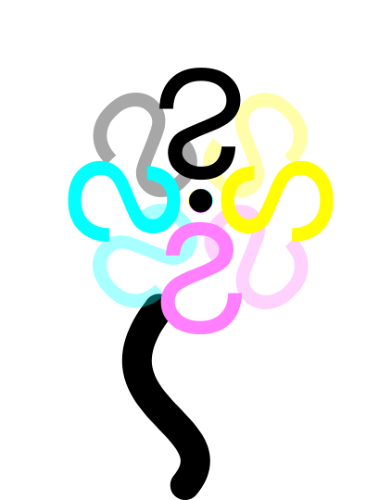